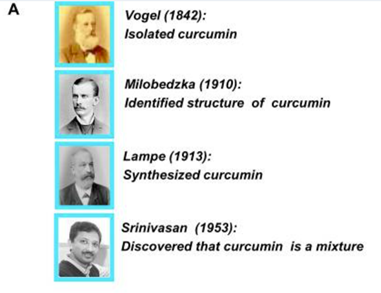
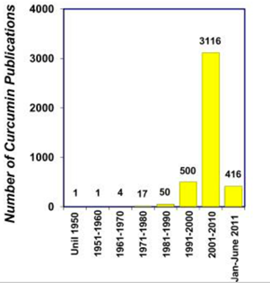

Behind the Seasoning: Curry Powder

- Unlike individual spices in Indian homes, curry powder was crafted for the convenience of British colonizers.
- Various types of curry powder exist, each with unique blends influenced by different regions and cuisines, such as:
- Yellow curry
- Green curry
- Red curry
- Japanese curry powder
- Jamaican curry powder
- Indian curry powder
- Turmeric (Curcuma longa) is an intriguing ingredient with a rich history as a dietary spice and herbal supplement in ancient China and India.
- The use of turmeric in Asia dates back more than 2000 years where it was used in cooking, medicine, cosmetics and fabric dyes.
- It gained popularity in European society from the 14th century A.D.
- Turmeric is arguably one of the most widely used spices throughout the world, known by various names adopted by locals.
- The primary active compound responsible for the yellow color, named curcumin, was identified in the early 1900s.
- Advancements in modern medicine have revealed many unknown medicinal properties of turmeric, including anti-oxidant, anti-mutagenic, anti-cancer, anti-microbial, and anti-cardiovascular activities.
- Studies strongly indicate that curcumin, the active compound in turmeric, is the key ingredient responsible for the major therapeutic activities of turmeric.
Is it found in nature?
Curcumin is found in nature, primarily sourced from turmeric, a spice derived from the rhizome of the Curcuma longa plant. Turmeric has been recognized for its medicinal properties for thousands of years, and curcumin is its major bioactive component. Curcumin, also known as diferuloylmethane, is a polyphenol naturally occurring in the rhizome of turmeric and other Curcuma species. It has gained significant interest from both the medical and culinary worlds due to its numerous health benefits, including its antioxidant and anti-inflammatory properties. However, curcumin's bioavailability is poor when ingested alone, primarily due to factors such as poor absorption, rapid metabolism, and rapid elimination. Nonetheless, its bioavailability can be significantly enhanced when combined with agents like piperine, found in black pepper, which can increase curcumin's bioavailability by up to 2000%. Thus, curcumin's benefits are best achieved when sourced from natural turmeric and combined with enhancing agents to improve absorption and efficacy.
First Discovery
Curcumin's journey from discovery to recognition spans over two centuries. In the early 19th century, Vogel and Pelletier isolated a "yellow coloring-matter" from turmeric, naming it curcumin. It wasn't until 1910 that Milobedzka and Lampe identified its chemical structure as diferuloylmethane. Despite its long history of use in Asian countries, curcumin's biological properties were scientifically acknowledged much later.
In 1949, Schraufstatter and colleagues published a seminal paper in Nature, revealing curcumin's antibacterial properties against various pathogens. However, scientific interest remained tepid until the 1970s when researchers began unveiling its diverse characteristics, including cholesterol-lowering, anti-diabetic, anti-inflammatory, and antioxidant activities. The 1980s witnessed a pivotal moment with Kuttan and colleagues demonstrating curcumin's anti-cancer potential in both laboratory and animal studies.
In 1995, another significant breakthrough occurred when a group showcased curcumin's anti-inflammatory prowess by inhibiting the pro-inflammatory transcription factor NF-κB. This marked a crucial milestone in understanding curcumin's mechanisms of action, laying the groundwork for further exploration of its therapeutic potential. Despite a slow start, curcumin has emerged as a multifaceted compound with promising implications for human health.
The discovery of curcumin can be traced back over two centuries to the early 19th century. In 1815, two French scientists named Vogel and Pelletier reported isolating a "yellow coloring-matter" from turmeric rhizomes. They named this substance curcumin. However, at this early stage the compound had not been fully characterized or purified.
In the following decades, several other chemists attempted to deduce the structure of curcumin but were unable to definitively identify it. Then, in 1842, Vogel Jr. obtained a purer preparation of curcumin, though he did not report its exact formula. Progress continued slowly over the next several decades as scientists worked to uncover curcumin's structure through analytical experiments and proposed potential structures.
It was not until 1910 that Polish scientists named Milobedzka and Lampe were finally able to correctly identify curcumin's chemical structure. Through their work, they determined it to be diferuloylmethane, with the systematic name 1,6-heptadiene-3,5-dione-1,7-bis (4-hydroxy-3-methoxyphenyl)-(1E, 6E). To confirm this discovery, the same research group conducted further experiments in 1913 that resulted in the first synthesis of curcumin in a laboratory.
Moving forward, in the early 20th century Indian scientist Srinivasan helped advance understanding of curcumin by separating and quantifying its components through chromatography techniques. This allowed for purer samples of curcumin to be obtained for study. However, despite centuries of use as a traditional medicine, the biological activity of isolated curcumin itself was not scientifically explored until later.
In 1949, a paper published in the journal Nature by researchers Schraufstatter and colleagues reported one of the first findings of curcumin's biological properties. Through experiments, they discovered curcumin has antibacterial effects against various pathogens like Staphylococcus aureus and Salmonella paratyphi. Nevertheless, relatively few additional studies on curcumin were conducted during the following two decades.
It was not until the 1970s that curcumin began receiving more focused scientific investigation. In this period, three independent research groups uncovered diverse therapeutic activities of curcumin such as its cholesterol-lowering, anti-diabetic, anti-inflammatory, and antioxidant properties. This sparked greatly increased research interest in curcumin and laid the groundwork for identifying many of its beneficial health effects studied since.
In summary, while turmeric containing curcumin has been utilized for thousands of years in traditional medical systems, it took painstaking analytical work over the entire 19th century and early 20th century to eventually elucidate curcumin's true molecular structure. Identification of its biological activities then accelerated significantly in scientific studies from the mid-20th century onward.